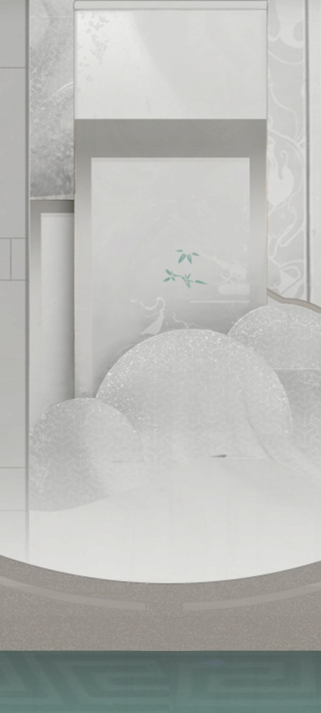

本局 0 分 · 最高 0 分
12 级大物华出现了，还要继续跑吗？
场上存在 09：从 01~08 中任选一项，替换当前待发送的水果。
不会消耗 09；09 离场后该入口消失。
传闻输入一句神秘暗号，就能获得所有水果（12 除外）的自由放置权。
已解锁：点选水果后，点击场上任意位置自由放置。
成就保存在本机浏览器中，重开一局不会清空。
正在准备水果…
请检查 vendor/matter.min.js 是否存在。